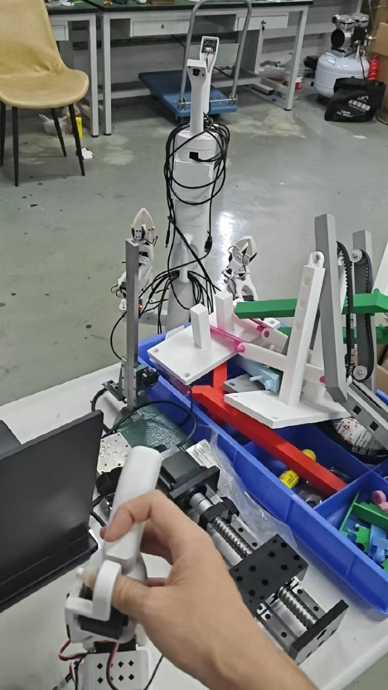
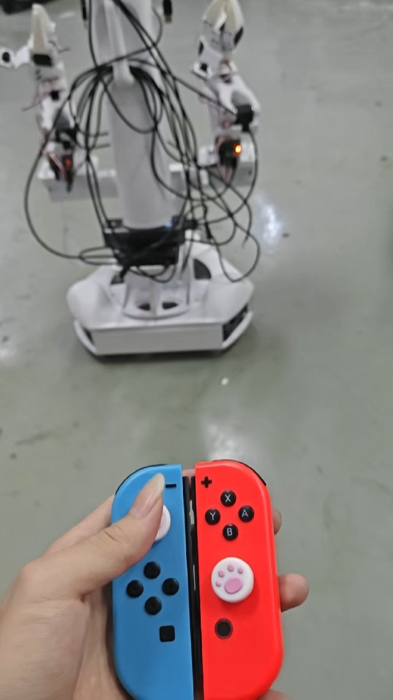

观看真机演示Aloha Mini
从设备调通，到遥操作落地。
作为电子组 / 软件组成员，参与树莓派调试、Ubuntu / SSH 通信链路、Joy-Con 遥操作适配与示教数据采集。
团队结果 视觉识别特定物体后的自主抓取与放置。项目页收录三段真机演示。
我的分工与项目复盘CUTUS / 学习 · 制作 · 求证
你好，我是 Cutus。
中国科学技术大学 · 2025 级机器人工程本科生
在中国科大人形机器人研究院空中机器人课题组，探索机器人如何飞行、附着与栖息。这里记录我的工程实践、论文阅读，以及从想法走向实验的过程。
继续 Crazyflie 学习 · 打开进度面板SELECTED WORK


观看真机演示作为电子组 / 软件组成员，参与树莓派调试、Ubuntu / SSH 通信链路、Joy-Con 遥操作适配与示教数据采集。
团队结果 视觉识别特定物体后的自主抓取与放置。项目页收录三段真机演示。
我的分工与项目复盘同一个足端，
能否适应不同表面？
围绕 Crazyflie 平台，探索预压缩薄板与 SMA 驱动的模式切换，把附着机构与飞控学习连接起来。
证据边界 已有双稳态观察与 SMA 翻转初步记录；带载保持、双向重复性和整机栖息仍待验证。
研究问题、已有证据与下一步OPEN NOTEBOOK
LEARNING IN PUBLIC
学习面板需要 JavaScript。你也可以阅读完整学习路线。
LET’S CONNECT
欢迎交流机器人实践、论文阅读与课程学习。